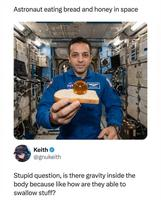

Meta has started removing ads from law firms seeking clients for social media addiction lawsuits, just weeks after a jury found Meta and YouTube negligent in a landmark case involving harm to a young user. "Lawyers across the country now are seeking new plaintiffs, in the hopes of bringing a class action lawsuit that could result in lucrative verdicts," reports Axios. From the report: Axios has identified more than a dozen such ads that were deactivated today, some of which came from large national firms like Morgan & Morgan and Sokolove Law. Almost all of them ran on both Facebook and Instagram. Some also appeared on Threads and Messenger, plus Meta's Audience Network -- which distributes ads to thousands of third-party sites.
One such ad read: "Anxiety. Depression. Withdrawal. Self-harm. These aren't just teenage phases -- they're symptoms linked to social media addiction in children. Platforms knew this and kept targeting kids anyway." A few of the ads still remain active, including some that were posted earlier today. "We're actively defending ourselves against these lawsuits and are removing ads that attempt to recruit plaintiffs for them," a Meta spokesperson said in a statement. "We will not allow trial lawyers to profit from our platforms while simultaneously claiming they are harmful."
Read more of this story at Slashdot.
Longtime Slashdot reader fahrbot-bot shares a report from NewScientist: According to quantum chromodynamics (QCD) -- widely considered to be our best theory for describing the strong force, which binds quarks inside protons and neutrons -- even a perfect vacuum isn't truly empty. Instead, it is filled with short-lived disturbances in the underlying energy of space that flicker in and out of existence, known as virtual particles. Among them are quark-antiquark pairs. Under normal conditions, these fleeting pairs vanish almost as soon as they appear. But if enough energy is injected into a vacuum, QCD predicts they can be promoted into real, detectable particles with measurable mass. Now, the STAR collaboration -- an international team of physicists working at the Relativistic Heavy Ion Collider in Brookhaven National Laboratory in New York state -- has observed this process for the first time.
The team smashed together high-energy protons in a vacuum, producing a spray of particles. Some of these particles should be quark-antiquark pairs pulled directly from the vacuum itself, but quarks can never exist alone and immediately combine into composite particles. Quarks and antiquarks are born with their spins correlated -- a shared quantum alignment inherited from the vacuum. The researchers found that this link persists even after the quarks and antiquarks become part of larger particles called hyperons, which decay in less than a tenth of a billionth of a second. Spotting these spin-aligned hyperons in the aftermath of the proton collisions allowed the researchers to confirm that the quarks within them came from the vacuum. The findings have been published in the journal Nature.
Read more of this story at Slashdot.
An anonymous reader quotes a report from NPR: Women in the U.S. gave birth to roughly 710,000 fewer children last year compared with the nation's peak in 2007, according to preliminary data released (PDF) this week by the Centers for Disease Control and Prevention. Lead researcher Brady Hamilton, a demographer with the CDC's National Center for Health Statistics, said the latest one percent drop in "general fertility" from 2024 to 2025 is part of a long-running downward trend. "Since 2007, there's been a decline in the general fertility rate [in the U.S.] of 23%," Hamilton told NPR.
The impact of that change in real numbers is sizable: In 2007, there were 4,316,233 babies born. Last year, even though the nation's population as a whole is larger, there were only 3,606,400 newborns. There's no consensus over why women and couples have shifted their behavior so significantly. Some experts point to economic factors, others say cultural influences, and better access to education and contraception for women are driving the change.
"We're seeing big drops in fertility rates for young women, teenagers and women in their 20s," said economist Martha Bailey, head of the California Center for Population Research at the University of California, Los Angeles. "What's not yet clear is whether or not those same women will go on to have children later on."
"People are having the number of children they want and that they can afford at a time that makes the most sense for them," she said. "What I don't think anyone is in favor of is a Handmaid's Tale type policy regime, where we're trying to talk families into having children they don't want."
One silver lining in the data is the 7% decline in teen pregnancies in 2025. Bianca Allison, pediatrician and associate professor at the University of North Carolina School of Medicine, said: "What is actually affecting the birth rates are likely lower rates of teen pregnancy overall, which is in the context of higher use of contraception and lower sexual activity for youth, and then also continued access to abortion care."
Read more of this story at Slashdot.
"One of VMware's biggest competitors, Nutanix, claims to have swiped tens of thousands of VMware customers," reports Ars Technica. They said higher prices, forced bundling, licensing changes, and more strained partner relationships have frustrated customers and driven them away from the leading virtualization firm. From the report: Speaking at a press briefing at Nutanix's .NEXT conference in Chicago this week, Nutanix CEO Rajiv Ramaswami said that "about 30,000 customers" have migrated from VMware to the rival platform, pointing to customer disapproval over Broadcom's VMware strategy, SDxCentral, a London-based IT publication, reported today. "I think there's no doubt that the customer sentiment continues to be negative about Broadcom," Ramaswami said, per SDxCentral.
Nutanix hasn't specified how many of the customers that it got from VMware are SMBs or enterprise-sized; although, adoption is said to be strongest among mid-market customers as Nutanix also tries wooing larger customers, often by starting with partial deployments. During this week's press briefing, Ramaswami reportedly said that some of the customers that moved from VMware to Nutanix during the latter's most recent fiscal quarter represented Nutanix's "strongest quarterly new logo additions in eight years." "Most of the logos came from our typical VMware migrations on to the [hyperconverged infrastructure] platform," he said.
During the Nutanix conference, Brandon Shaw, Nutanix VP and head of technology services, said that Western Union has been migrating from VMware to Nutanix for six months, The Register reported. The financial services company is moving 900 to 1,200 applications across 3,900 cores. Shaw said that Western Union has been exploring new IT suppliers to help it become more customer-focused. Despite Broadcom's history of "decent lines of communication" with Western Union, Shaw said that Western Union had "challenges partnering with them."
Shaw also pointed to Broadcom's efforts to push customers to buy the VMware Cloud Foundation (VCF), despite the product often having more features than companies need and at high prices. Since moving to Nutanix, the Denver-headquartered financial firm is also benefiting from having more flexibility around workload locations, which is important since Western Union is in over 200 countries, The Register said.
Read more of this story at Slashdot.
OpenAI is reportedly preparing a new cybersecurity product for a small group of partners, out of concern that a broader rollout could wreak havoc if it were released more widely. If that move sounds familiar, it's because Anthropic took a similar limited-release approach with its Mythos model and Project Glasswing initiative. Axios reports: OpenAI introduced its "Trusted Access for Cyber" pilot program in February after rolling out GPT-5.3-Codex, the company's most cyber-capable reasoning model. Organizations in the invite-only program are given access to "even more cyber capable or permissive models to accelerate legitimate defensive work," according to a blog post. At the time, OpenAI committed $10 million in API credits to participants. [...]
Restricting the rollout of a new frontier model makes "more sense" if companies are concerned about models' ability to write new exploits -- rather than about their ability to find bugs in the first place, Stanislav Fort, CEO of security firm Aisle, told Axios. Staggering the release of new AI models looks a lot like how cybersecurity vendors currently handle the disclosure of security flaws in software, Lee added. "It's the same debate we've had for decades around responsible vulnerability disclosure," Lee said.
Read more of this story at Slashdot.
An anonymous reader quotes a report from CNN: A hacker has allegedly stolen a massive trove of sensitive data -- including highly classified defense documents and missile schematics -- from a state-run Chinese supercomputer in what could potentially constitute the largest known heist of data from China. The dataset, which allegedly contains more than 10 petabytes of sensitive information, is believed by experts to have been obtained from the National Supercomputing Center (NSCC) in Tianjin -- a centralized hub that provides infrastructure services for more than 6,000 clients across China, including advanced science and defense agencies.
Cyber experts who have spoken to the alleged hacker and reviewed samples of the stolen data they posted online say they appeared to gain entry to the massive computer with comparative ease and were able to siphon out huge amounts of data over the course of multiple months without being detected. An account calling itself FlamingChina posted a sample of the alleged dataset on an anonymous Telegram channel on February 6, claiming it contained "research across various fields including aerospace engineering, military research, bioinformatics, fusion simulation and more." The group alleges the information is linked to "top organizations" including the Aviation Industry Corporation of China, the Commercial Aircraft Corporation of China, and the National University of Defense Technology.
Cyber security experts who have reviewed the data say the group is offering a limited preview of the alleged dataset, for thousands of dollars, with full access priced at hundreds of thousands of dollars. Payment was requested in cryptocurrency. CNN cannot verify the origins of the alleged dataset and the claims made by FlamingChina, but spoke with multiple experts whose initial assessment of the leak indicated it was genuine. The alleged sample data appeared to include documents marked "secret" in Chinese, along with technical files, animated simulations and renderings of defense equipment including bombs and missiles.
Read more of this story at Slashdot.
Waymo is launching a pilot with cities and Google's Waze to share pothole data collected by its robotaxis, giving local transportation departments a new way to find and fix road damage more quickly. "We realized, hey, once we're at scale, we can actually share this data with cities, which is something that they've asked for and something that we collect at scale," said Arielle Fleisher, Waymo's policy development and research manager. "And so we figured out a way to make that happen." The Verge reports: Waymo uses its perception hardware, including cameras and radar, as well as accelerometers and the vehicle's physical feedback system, to log every pothole its vehicles encounter. These sensors detect physical changes to the road's surface, such as tilt and movement when the vehicle encounters irregularities. Originally, Waymo knew it needed the ability to detect potholes so it could ensure that its vehicles slowed down to avoid damage or injury to the passenger. Later, the company realized this could be invaluable data for cities, too.
Under the new pilot program, that data will now be made available to cities' departments of transportation through a free-to-use Waze for Cities platform, which provides access to real-time, user-generated traffic data that officials can then use to make important decisions -- such as pothole repair. The platform also allows for Waze users to validate pothole locations through their own observations, decreasing the chances that city officials will be led astray by false positives.
Currently, many cities rely on a patchwork of non-emergency 311 reports and manual inspections to address their pothole problems. Waymo developed this pilot program after collecting years of feedback from city officials about the state of their highways and surface streets. The company is launching the new pilot in the San Francisco Bay Area, as well as Los Angeles, Phoenix, Austin, and Atlanta, where Waymo says it has already helped the city identify approximately 500 potholes. Fleisher said that Waymo would be open to expanding the project to other street maladies based on further feedback from officials. The company is eager to learn what other types of street condition or safety data might be valuable, she said. "We want to be responsive to cities," Fleisher said. "They are interested in safer streets and potholes are really a tough challenge for cities. So we really wanted to meet that need as part of our desire to be a good partner and to ultimately advance our goal for safer streets."
Read more of this story at Slashdot.
An anonymous reader quotes a report from the Guardian: [Five skilled workers aged 50 and older spoke] to the Guardian about how, after struggling to find work in their fields, they have turned to an emerging and growing category of work: using their expertise to train artificial intelligence models. Known as data annotation, the work involves labeling and evaluating the information used to train AI models like Open AI's ChatGPT or Google's Gemini. A doctor, for example, might review how an AI model answers medical questions to flag incorrect or unsafe responses and suggest better ones, helping the system learn how to generate more accurate and reliable responses. The ultimate goal of training is to level up AI models until they're capable of doing a job as well as a human could -- meaning they could someday replace some of these human workers.
The companies behind AI training, such as Mercor, GlobalLogic, TEKsystems, micro1 and Alignerr, operate large contractor networks staffed by people like Ciriello. Their clients include tech giants like OpenAI, Google and Meta, academic researchers and industries including healthcare and finance. For experienced professionals, AI training contracts can be a side hustle -- or a temporary fallback following a layoff -- where top experts can, in some cases, earn over $180 an hour. But that's on the high end. For some older workers [...], it represents another thing entirely: a last refuge in a brutal job market that is harder to stay in, or re-enter, the older they get. For many of them, whether or not they're training their AI replacements in their professions is besides the point. They need the work now.
[...] "There's just a lot of desperation out there," Johnson said. As opportunities narrow, many turn to what Joanna Lahey, a professor at Texas A&M University who studies age discrimination and labor outcomes, calls "bridge jobs" -- lower-paying, less demanding roles that help workers stay financially afloat as they approach retirement. Historically, that meant taking temp assignments, retail and fast-food work and gig roles like Uber and food delivery. Now, for skilled workers -- engineers, lawyers, nurses or designers, for example -- using their expertise for AI data training is becoming the new bridge job. "[AI] training work may be better in some ways than those earlier alternatives," Lahey told the Guardian.
AI training can offer flexibility, quick income and intellectual engagement. But it's often a clear step down. Professionals in fields such as software development, medicine or finance typically earn six-figure salaries that come with benefits and paid leave, according to the US Bureau of Labor Statistics. According to online job postings, AI training gigs start at $20 an hour, with pay increasing to between $30 and $40 an hour. In some cases, AI trainers with coveted subject matter expertise can earn over $100 an hour. AI training is contract-based, though, meaning the pay and hours are unstable, and it often doesn't come with benefits.
Read more of this story at Slashdot.
An anonymous reader quotes a report from The Drive: Farmers have been fighting John Deere for years over the right to repair their equipment, and this week, they finally reached a landmark settlement. While the agricultural manufacturing giant pointed out in a statement that this is no admission of wrongdoing, it agreed to pay $99 million into a fund for farms and individuals who participated in a class action lawsuit. Specifically, that money is available to those involved who paid John Deere's authorized dealers for large equipment repairs from January 2018. This means that plaintiffs will recover somewhere between 26% and 53% of overcharge damages, according to one of the court documents (PDF) -- far beyond the typical amount, which lands between 5% and 15%.
The settlement also includes an agreement by Deere to provide "the digital tools required for the maintenance, diagnosis, and repair" of tractors, combines, and other machinery for 10 years. That part is crucial, as farmers previously resorted to hacking their own equipment's software just to get it up and running again. John Deere signed a memorandum of understanding in 2023 that partially addressed those concerns, providing third parties with the technology to diagnose and repair, as long as its intellectual property was safeguarded. Monday's settlement seems to represent a much stronger (and legally binding) step forward. The report notes that a judge's approval of the settlement is still required but likely to happen. John Deere also faces another lawsuit by the U.S. FTC, accusing the company of forcing farmers to use its authorized dealer network and driving up their costs for parts and repairs.
Read more of this story at Slashdot.
BrianFagioli writes: Mozilla is accusing Microsoft of stacking the deck against Firefox, arguing that design choices in Windows steer users toward Edge even when they explicitly choose another browser. According to Mozilla, parts of Windows still open links in Edge regardless of the default browser setting, including results from the taskbar search and links launched from apps like Outlook and Teams. Mozilla says this means Firefox often never even gets the opportunity to handle those links, which quietly shifts user activity back into Microsoft's ecosystem.
The company also points to Microsoft's aggressive rollout of Copilot as another example of platform power being used to push Microsoft services. Copilot appeared pinned to the taskbar, arrived automatically on many systems with Microsoft 365, and even received a dedicated keyboard key on some laptops. Mozilla argues that when the maker of the dominant desktop operating system promotes its own browser and AI tools at the system level, it becomes far harder for independent browsers like Firefox to compete.
Read more of this story at Slashdot.
Amazon CEO Andy Jassy says the company may eventually sell its Trainium AI chips directly to outside customers, not just through AWS, which would put Amazon in more direct competition with Nvidia. "There's so much demand for our chips that it's quite possible we'll sell racks of them to third parties in the future," Jassy wrote in his annual shareholder letter Thursday. He also revealed the company's chip business is already running at more than $20 billion annually, with demand so strong that current and even future generations are largely spoken for. Quartz reports: Access to Amazon's chips is currently limited to Amazon Web Services, with customers paying for cloud-based usage rather than owning any physical hardware. Selling to AWS and external customers alike, as standalone chipmakers do, would put annual revenue at around $50 billion, up from the $20 billion the company estimates for the year, Jassy said. The $20 billion figure spans three product lines: Trainium, the AI accelerator chip; Graviton, a general-purpose processor; and Nitro, a chip that helps run Amazon's EC2 server instances. All three are growing at triple-digit rates year over year, Jassy claimed in his letter.
Jassy said demand for Trainium has outpaced supply at each generation. Trainium2 is essentially unavailable, with its entire allocated capacity spoken for. Trainium3 started reaching customers in early 2026, and reservations have filled nearly all available supply. Even Trainium4 -- which is not expected to reach wide release for another year and a half -- has substantial pre-orders committed. Jassy argued that a full-scale Trainium rollout could shave tens of billions off annual capital costs while meaningfully widening profit margin.
Read more of this story at Slashdot.
After nearly 20 years on the platform, The Electronic Frontier Foundation (EFF) says it is leaving X. "This isn't a decision we made lightly, but it might be overdue," the digital rights group said. "The math hasn't worked out for a while now." From the report: We posted to Twitter (now known as X) five to ten times a day in 2018. Those tweets garnered somewhere between 50 and 100 million impressions per month. By 2024, our 2,500 X posts generated around 2 million impressions each month. Last year, our 1,500 posts earned roughly 13 million impressions for the entire year. To put it bluntly, an X post today receives less than 3% of the views a single tweet delivered seven years ago. [...]
When you go online, your rights should go with you. X is no longer where the fight is happening. The platform Musk took over was imperfect but impactful. What exists today is something else: diminished, and increasingly de minimis.
EFF takes on big fights, and we win. We do that by putting our time, skills, and our members' support where they will effect the most change. Right now, that means Bluesky, Mastodon, LinkedIn, Instagram, TikTok, Facebook, YouTube, and eff.org. We hope you follow us there and keep supporting the work we do. Our work protecting digital rights is needed more than ever before, and we're here to help you take back control.
Read more of this story at Slashdot.
BrianFagioli writes: Little Snitch, the well known macOS tool that shows which applications are connecting to the internet, is now being developed for Linux. The developer says the project started after experimenting with Linux and realizing how strange it felt not knowing what connections the system was making. Existing tools like OpenSnitch and various command line utilities exist, but none provided the same simple experience of seeing which process is connecting where and blocking it with a click. The Linux version uses eBPF for kernel level traffic interception, with core components written in Rust and a web based interface that can even monitor remote Linux servers.
During testing on Ubuntu, the developer noticed the system was relatively quiet on the network. Over the course of a week, only nine system processes made internet connections. By comparison, macOS reportedly showed more than one hundred processes communicating externally. Applications behave similarly across platforms though. Launching Firefox immediately triggered telemetry and advertising related connections, while LibreOffice made no network connections at all during testing. The early release is meant primarily as a transparency tool to show what software is doing on the network rather than a hardened security firewall.
Read more of this story at Slashdot.
A federal appeals court denied Anthropic's bid to temporarily block the Pentagon's blacklisting, meaning the company remains shut out of Defense Department contracts while the case continues, even though a separate court has allowed other federal agencies to keep using Claude for now. CNBC reports: "In our view, the equitable balance here cuts in favor of the government," the appeals court said in its decision. "On one side is a relatively contained risk of financial harm to a single private company. On the other side is judicial management of how, and through whom, the Department of War secures vital AI technology during an active military conflict. For that reason, we deny Anthropic's motion for a stay pending review on the merits." With the split decisions by the two courts, Anthropic is excluded from DOD contracts but is able to continue working with other government agencies while litigation plays out. Defense contractors will be prohibited from using Claude in their work with the agency, but they can use it for other cases.
[...] In the ruling on Wednesday, the court acknowledged that Anthropic "will likely suffer some degree of irreparable harm absent a stay," but that the company's interests "seem primarily financial in nature." While the company claimed the DOD was standing in the way of its right to free speech, "Anthropic does not show that its speech has been chilled during the pendency of this litigation," the order said. Because of the harm Anthropic is likely to suffer, the appeals court said "substantial expedition is warranted."
An Anthropic spokesperson said in a statement after the ruling that the company is "grateful the court recognized these issues need to be resolved quickly" and that it's "confident the courts will ultimately agree that these supply chain designations were unlawful." "While this case was necessary to protect Anthropic, our customers, and our partners, our focus remains on working productively with the government to ensure all Americans benefit from safe, reliable AI," Anthropic said.
Read more of this story at Slashdot.
Bloomberg's Mark Gurman says Apple's foldable iPhone is still "on track" for a September unveiling alongside the iPhone 18 Pro lineup. 9to5Mac reports: The report notes that Apple's stock took a hit earlier today after Nikkei Asia indicated the iPhone Fold was having serious production issues. Clearly, sources within Apple were motivated to share positive news via Gurman. Not long ago, Gurman himself said that he was expecting an iPhone Fold release date that was a little bit later than iPhone 18 Pro. That's still very possible, but it sounds like Apple is internally feeling optimistic about its targeted September launch.
The report continues: "While the complexity of the new display and materials may limit initial supply for several weeks, Apple is currently operating with a plan to put the device on sale around the same time -- or very soon after -- the new non-foldable models, the people said." Gurman adds an important qualifier: "Still, the release is six months away and production has yet to ramp up. That means the timing isn't final."
Read more of this story at Slashdot.
Kirsten Korosec / TechCrunch : Waymo and Waze launch a pilot program to send pothole data collected by robotaxi sensors to the Waze for Cities platform and Waze app, starting in five markets — Two Alphabet-owned businesses are teaming up to find potholes and share it with cities. — Waymo and Waze announced Thursday …
Eugene Kim / Business Insider : Documents: Amazon is working on “Project Houdini”, which aims to cut the time it takes to construct data centers by preassembling core server rooms into modules — Follow Eugene Kim … - Amazon's Project Houdini modularizes main server rooms, expediting AWS data center buildouts.
TechCrunch : Snap announces a partnership between Specs, its AR glasses-focused subsidiary, and Qualcomm, whose Snapdragon XR platform will power Specs' upcoming AI glasses — Specs has long been teasing the next version of its augmented reality glasses. A new partnership with Qualcomm promises some movement in that department.
Brody Ford / Bloomberg : CoreWeave says it has signed a multiyear deal with Anthropic, including a variety of Nvidia chips at data centers in the US; it now has 43 active data centers — Anthropic PBC agreed to rent data center capacity from CoreWeave Inc. as part of efforts to handle increasing demand for its artificial intelligence services.
Dominic Preston / The Verge : YouTube raises YouTube Premium's prices in the US: Lite is $1 more at $8.99/month, Individual is $2 more at $15.99/month, and Family is $4 more at $26.99/month — The standard plan is going up by $2 a month in the US. … YouTube Premium is getting more expensive in the US …
Frank Landymore / Futurism : Google News is showing Polymarket bets alongside news articles in the “For you” section; in tests, Polymarket bets also appeared on the Google News homepage — Google News has started showing Polymarket bets alongside actual news articles, often appearing as large blocks …
Sergiu Gatlan / BleepingComputer : Google rolls out end-to-end encryption for Gmail on Android and iOS devices for enterprise users, letting them read and compose emails without additional tools — Google says Gmail end-to-end encryption (E2EE) is now available on all Android and iOS devices, allowing enterprise users to read …
Counterpoint Research : Apple led global Q1 smartphone shipments for the first time, with a 21% share in Q1 2026; overall smartphone shipments fell 6% YoY due to memory chip shortages — Team Counterpoint — Counterpoint research is a young and fast growing research firm covering analysis of the tech industry.
John Sakellariadis / Politico : The CIA says it recently used AI to create its first-ever autonomous intelligence report, and plans to build “AI co-workers” into all of its analytic platforms — Ellis revealed that the agency recently used AI to create its first-ever autonomous intelligence report …
Kiuyan Wong / Bloomberg : Hong Kong grants its first stablecoin issuer licenses to HSBC and Standard Chartered from a pool of 36 applicants; they are set to issue stablecoins in H2 2026 — Hong Kong has granted its inaugural stablecoin issuer licenses to HSBC Holdings Plc and a joint venture of Standard Chartered Plc …
Bloomberg : Documents: Shenzhen-based computing company Sharetronic bought hundreds of Super Micro systems containing banned Nvidia H100 and H200 chips in 2025, worth ~$92M — Hours after the United States charged a Super Micro Computer Inc. co-founder with illegally smuggling billions of dollars' worth …
Debby Wu / Bloomberg : TSMC reports Q1 revenue up 35% YoY to ~$35.6B, vs. ~$35.2B est., signaling global chip demand stayed intact during the first weeks of the war in the Middle East — Taiwan Semiconductor Manufacturing Co. reported a 35% increase in quarterly revenue, suggesting global AI chip demand remained intact during …
Maxwell Zeff / Wired : OpenAI backs an Illinois bill shielding AI labs from liability, even for “critical harms” like 100+ deaths or $1B+ in damage, if they published safety reports — The ChatGPT-maker testified in favor of an Illinois bill that would limit when AI labs can be held liable …
Financial Times : Sources: Alibaba appointed Cloud CTO Zhou Jingren to lead its AI unit after a pivot from open source to monetizable MaaS models led to Qwen executive departures — Move may affect a global developer community that relies on Qwen models from the Chinese company
Anna Tong / Forbes : AfterQuery, which sells coding and finance training data to AI labs, says it raised a $30M Series A at a $300M valuation, and has hit a $100M+ annual run rate — AfterQuery, which raised $30 million several months ago, competes with data labeling companies like Mercor to sell training data …